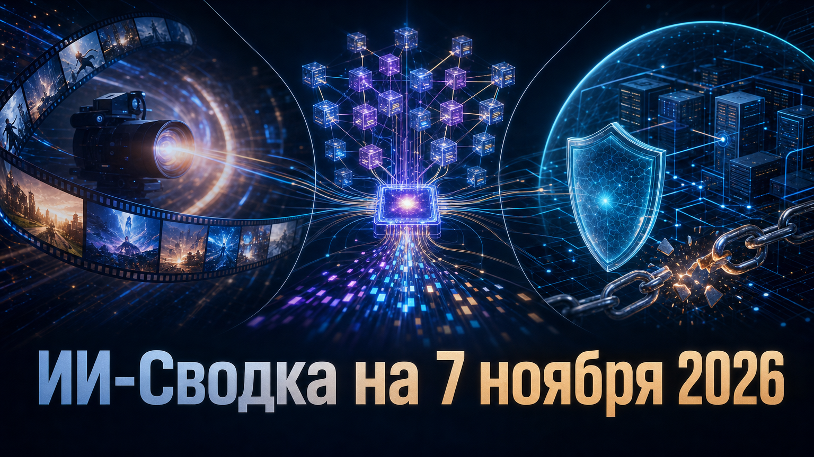

Новостей сегодня меньше, чем обычно
Свежая повестка соединяет три уровня развития ИИ: массовые мультимодальные продукты, открытую модельную инфраструктуру и защиту внутренних инструментов компаний. Google выводит в общий доступ новый режим генерации видео, Baidu открывает веса крупной MoE-модели, а раскрытие Binance напоминает, что ИИ-системы должны быть встроены в общую модель контроля доступов.
Практический вывод для команд: возможности моделей и агентных интерфейсов растут быстрее, чем зрелость процессов их безопасного подключения к данным, устройствам и критическим операциям.
Google начала развёртывание Gemini Omni 1.2 Flash и заявила о её общей доступности через Gemini API и Gemini for business. По анонсу Google, модель умеет нативно создавать и редактировать видео длиной от 3 до 15 секунд, а также поддерживает многоходовое редактирование в диалоге.
Компания заявляет о более точном следовании референсам и снижении цены на 30% относительно Omni 1.1 — до $0,07 за секунду для роликов 720p. Это расширяет набор сценариев для создателей контента, маркетинговых команд и разработчиков, но заявления о качестве и экономии пока исходят от самого поставщика и требуют проверки в реальных производственных процессах.
Как сообщает IT Pro, атака на Binance началась с фальшивых собеседований и вредоносных загрузок, после чего злоумышленники скомпрометировали ноутбук инженера. По изложению деталей, 20 октября этот доступ использовали для входа во внутренний ИИ-инструмент компании и дальнейшего захвата кошельков нескольких инженеров.
ФБР отдельно атрибутировало атаку стоимостью более $6 млрд северокорейским операторам TraderTraitor. Точная техническая роль внутреннего ИИ-инструмента публично не раскрыта, но сам эпизод подчёркивает: корпоративные ИИ-системы необходимо защищать как привилегированные компоненты — с сегментацией, минимальными правами и постоянным мониторингом действий.
Baidu опубликовала веса текстовой модели ERNIE-5.5-Flash-Base. Согласно официальной карточке модели, это sparse MoE-система с 280 млрд параметров, из которых на токен активируются 14 млрд; заявлена поддержка контекста до 1 млн токенов для дообучения и инференса.
Компания также разместила инструкции для развёртывания через SGLang и vLLM. Открытие весов даёт исследовательским и корпоративным командам возможность самостоятельно оценивать модель, адаптировать её под специализированные данные и строить собственные контуры инференса, однако заявленные характеристики не заменяют независимых сравнительных тестов качества, стоимости и безопасности.